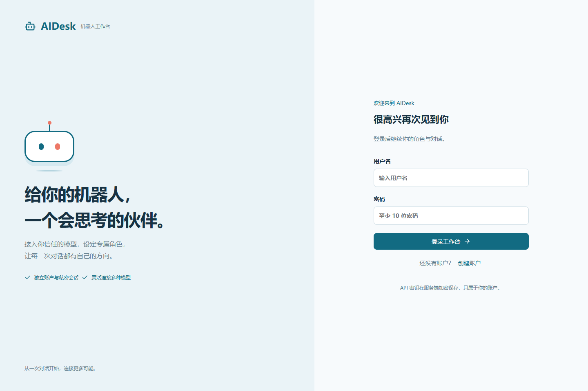

<!doctype html><html lang="zh-CN"><meta charset="utf-8"><meta name="viewport" content="width=device-width,initial-scale=1"><title>AIDesk 离线交互原型</title><style>body{margin:0;background:#f7fafc;color:#183243;font:16px "Microsoft YaHei",sans-serif}header{padding:24px 32px;background:white;border-bottom:1px solid #dbe6ec}h1{margin:0 0 10px}nav{display:flex;gap:8px;flex-wrap:wrap;padding:20px}button,a{cursor:pointer;border:1px solid #b6ccd8;background:white;border-radius:8px;padding:10px;color:#126b82}button.active{background:#126b82;color:white}main{margin:0 20px 30px;background:white;border:1px solid #dbe6ec}img{display:block;width:100%;height:auto}p{line-height:1.7}@media(max-width:600px){header{padding:20px}nav{padding:10px}}</style><header><h1>AIDesk 机器人工作台</h1><p>离线交互浏览原型。点击页面名称查看实际应用截图。全部业务数据为独立演示数据；设备为模拟器，未调用真实模型。</p><a href="../PRD.md">需求规格说明</a></header><nav><button data-file="01-登录.png">登录</button><button data-file="02-对话工作台-演示数据.png">对话工作台-演示数据</button><button data-file="03-模型管理.png">模型管理</button><button data-file="04-角色设定.png">角色设定</button><button data-file="05-设备管理-模拟设备.png">设备管理-模拟设备</button><button data-file="06-会议纪要-演示数据.png">会议纪要-演示数据</button><button data-file="07-语音设置.png">语音设置</button><button data-file="08-Agent动态-测试提醒.png">Agent动态-测试提醒</button><button data-file="09-移动端对话-演示数据.png">移动端对话-演示数据</button></nav><main></main><script>const img=document.querySelector('#screen');for(const b of document.querySelectorAll('button'))b.onclick=()=>{document.querySelectorAll('button').forEach(x=>x.classList.remove('active'));b.classList.add('active');img.src='assets/'+b.dataset.file;img.style.maxWidth=b.dataset.file.startsWith('09')?'390px':'100%';img.style.margin='auto';};</script></html>
